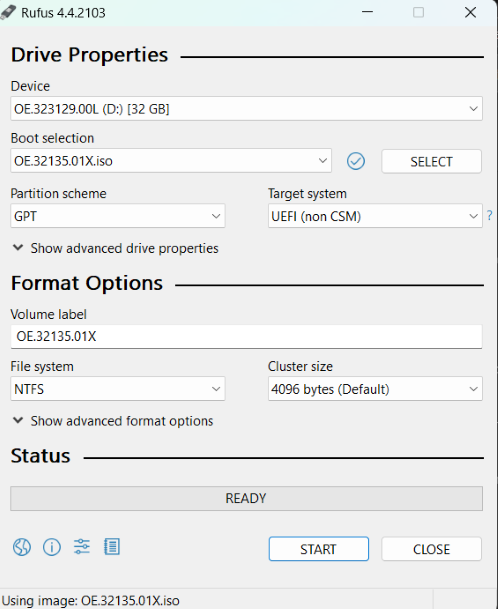
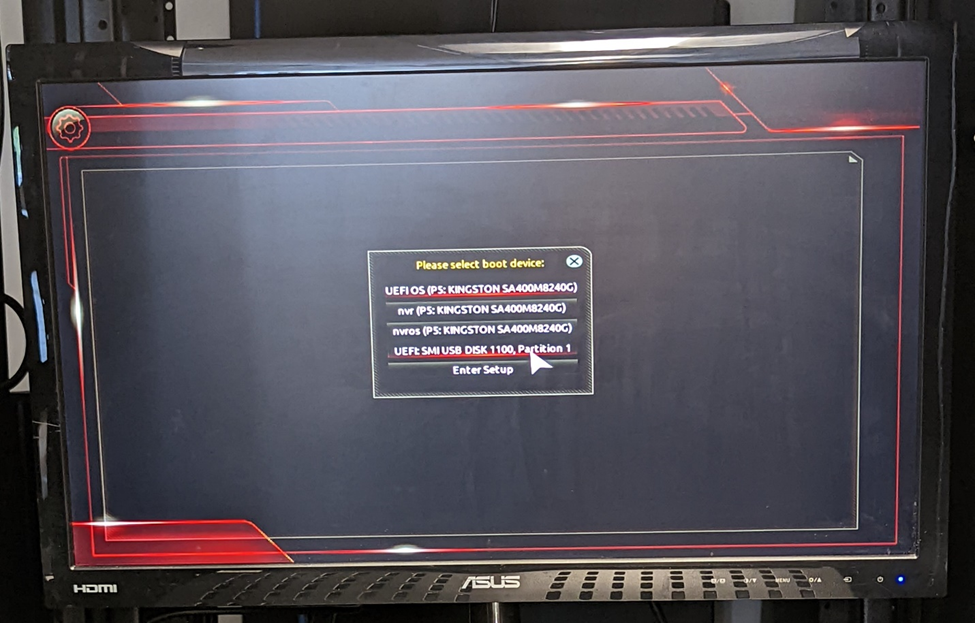

OpenEye OS Install & Recovery Guide
Part 1 — Creating a USB Recovery Drive
Reference manufacturer instructions here:
OpenEye Guide — Creating a USB Recovery Drive
Note: Select the image that starts with OE and ends with X.
- Check your OS image version in OWS (Help → About) and download the correct ISO.

- Download Rufus and run the executable.
- Select the ISO file and configure settings for your OS type.
- Linux — FAT32, GPT, UEFI
- Windows — NTFS, GPT, UEFI

- Click Start, confirm data wipe, and wait until complete.
- Safely eject the USB drive.
Part 2 — Windows 11 Update Process
1) Check Compatibility
- In OWS: Reports → Inventory Report → Recording Devices.
- Confirm motherboard model matches the compatible list.
2) Compatible Motherboards
- GA-Q670M-D3H
- GA-Q570M-D3H
- GA-Q370M-D3H
- GA-B360N-GSM
- MQ67EBI-SI
- IMB-1210-D
- H310I-IM-A R2.0
3) Order Correct License SKU
| Update SKU |
Description |
| OE-ZW11UPG-i7 |
Windows 10 → 11 update for Intel i7 CPU |
| OE-ZW11UPG |
Windows 10 → 11 update for Intel i5 CPU |
4) Apex & NVR Server Installers
Part 3 — System Recovery via USB
Reference manufacturer instructions here:
OpenEye Guide — System Recovery via USB
- Insert USB recovery drive into a blue USB 3.0 port.
- Reboot and press the correct boot key:
- Most Models — F12
- MV Models — F7
- MD Models — Esc, then Esc again after exiting BIOS
- If prompted for a password, enter:
dvr4321.
- Select UEFI USB recovery flash drive from the boot menu.

- Choose a recovery option in Apex Recovery Wizard:
- Factory Reset — Wipes OS + data
- Clean OS Install — Wipes OS partitions only
- Upgrade — Updates OS and Apex version

- If prompted, enter the unit serial number (ALL CAPS).
- Accept license agreement.
- Wait for progress bar to complete.
- Remove USB drive, click Finish, and allow the unit to reboot.
Part 4 — Software Links
Below are the current software links for various OpenEye software and platforms.
For additional downloads, visit the
OpenEye Software Page.
OpenEye Images
Linux Images
Windows 10 Images
Image Updates
Utilities
Back to Top
×